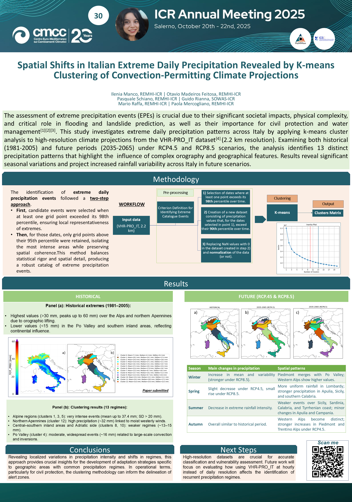

⬇️ Download PosterLavers, D.A., Villarini, G. (2015). The contribution of atmospheric rivers to precipitation in Europe and the United States. Journal of Hydrology, 522, 382–390.
Moccia, B., Ridolfi, E., Mineo, C., Russo, F., Napolitano, F. (2024). On the Occurrence of Extreme Rainfall Events Across Italy: Should We Update the Probability of Failure of Existing Hydraulic Works? Water Resources Management, 38(11), 4069–4082.
Pinto, J.G., Ulbrich, S., Parodi, A., Rudari, R., Boni, G., Ulbrich, U. (2013). Identification and ranking of extraordinary rainfall events over Northwest Italy: The role of Atlantic moisture. Journal of Geophysical Research: Atmospheres, 118(5), 2085–2097.
Raffa, M., Adinolfi, M., Reder, A., Marras, G. F., Mancini, M., Scipione, G., ... & Mercogliano, P. (2023). Very high resolution projections over Italy under different CMIP5 IPCC scenarios. Scientific Data, 10(1), 238.